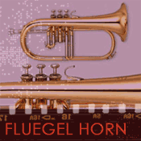

Brass instruments, as stated earlier, are literally made of different alloys of brass. The performer forms the mouth into a particular shape, called an 'embouchure,' that maximizes the quality of the sound as the performer buzzes into a mouthpiece attached to the instrument.
There are two types of brass instruments, divided by the overall shape of the tube of the instrument. The sides of the tube of cylindrical brass instruments are roughly parallel the length of the tube, while conical brass instruments have the tube gradually expand over the length of the instrument like an ice cream cone. Each type has a distinct sound, with conical instruments characterized by a more mellow sound than cylindrical instruments.
 Cornet
Cornet
The cornet, like the trumpet, is pitched in 'Bb' and functions in the same fashion as other transposing Bb instruments discussed earlier. It is a conical instrument and has a rounder, mellower sound than the trumpet.
Cornets were the standard high brass instrument in jazz through the 1930s, when the more forward-sounding trumpet began to displace it.
Watch and listen to Nat Adderley perform on the cornet. Watch and listen to the example.
 Trumpet
Trumpet
The Bb trumpet is a cylindrical brass instrument that plays in the same range as the cornet. It features a brighter, in-your-face sort of sound that really projects compared to the cornet.
The sound of the trumpet, like the cornet, can be acoustically modified by the use of 'mutes' that are placed into the end, or 'bell' of the instrument. Mutes can radically alter the sound of the instrument, without using electronics. There are straight, cup, and harmon mutes that each modifies the timbre or 'color' of the instrument.
Watch and listen to trumpeter Miles Davis perform "New Blues." Watch and listen to the example.
Fluegel hornThe fluegel horn, like the cornet, is a conical instrument pitched in Bb that became popular in the 1950s and 1960s. It is characterized by an extremely mellow sound that is almost completely devoid of any trumpet-like edge.
Watch and listen to Clark Terry perform on the fluegel horn. Watch and listen to the example.
 Trombone (aka Bone)
Trombone (aka Bone)
Like the trumpet, the trombone is a cylindrical instrument. It features a unique 'slide' that allows the performer to glide between notes and is used to lengthen and shorten the tube of the trombone.
Watch and listen to trombonist Frank Rosolino perform "Mean To Me." Watch and listen to the example.